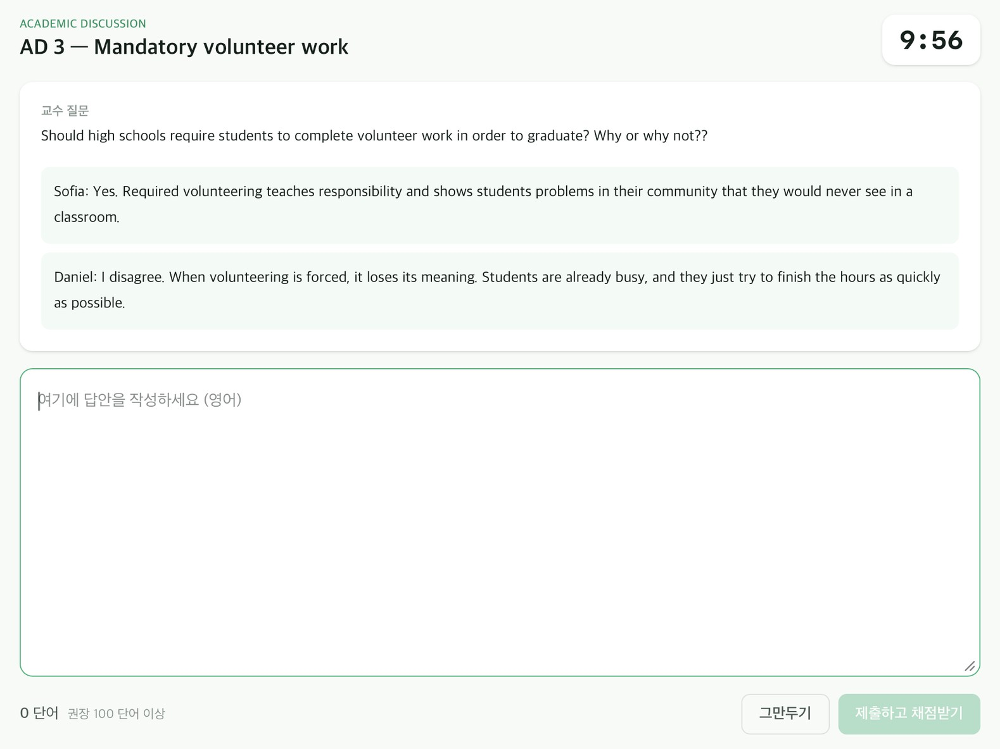
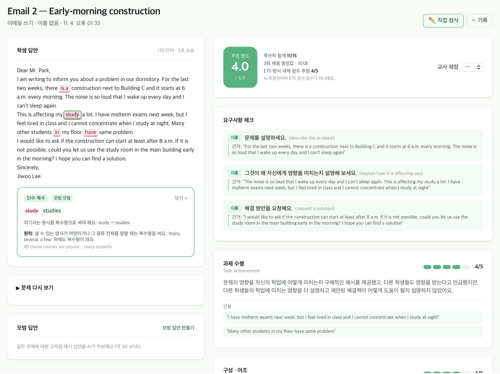
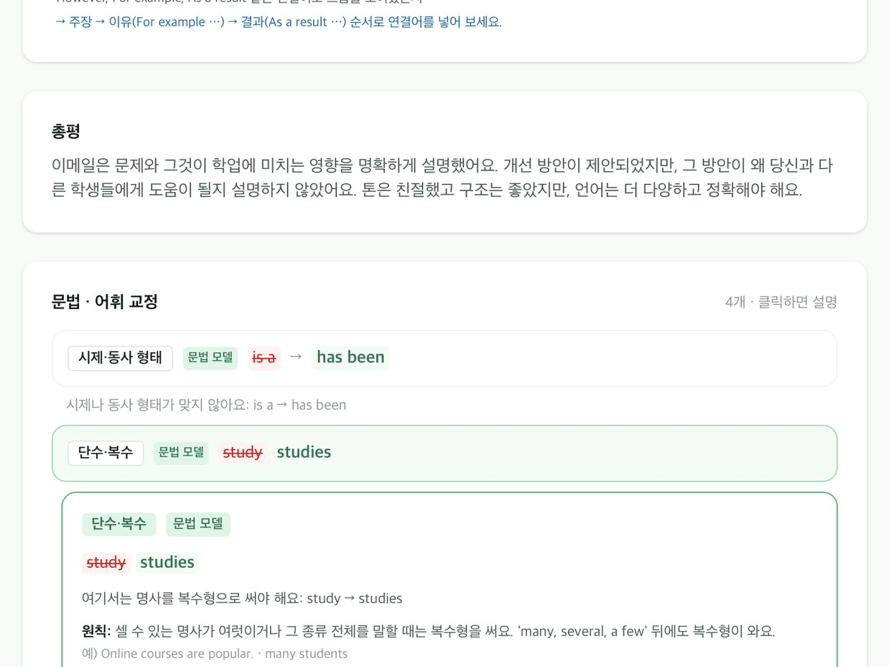
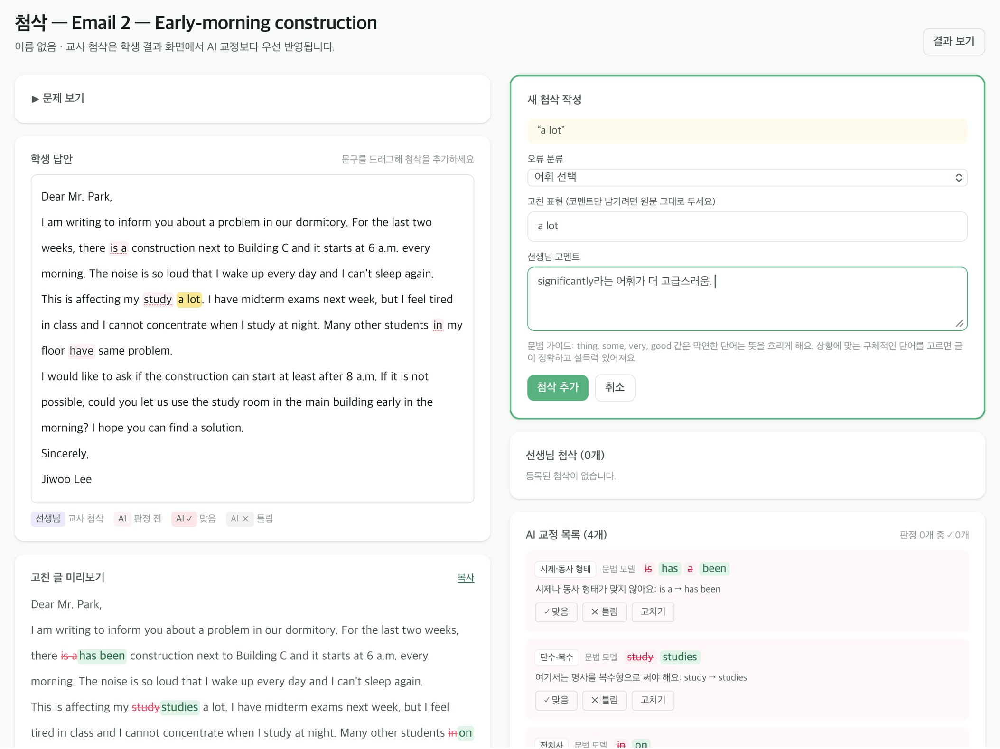
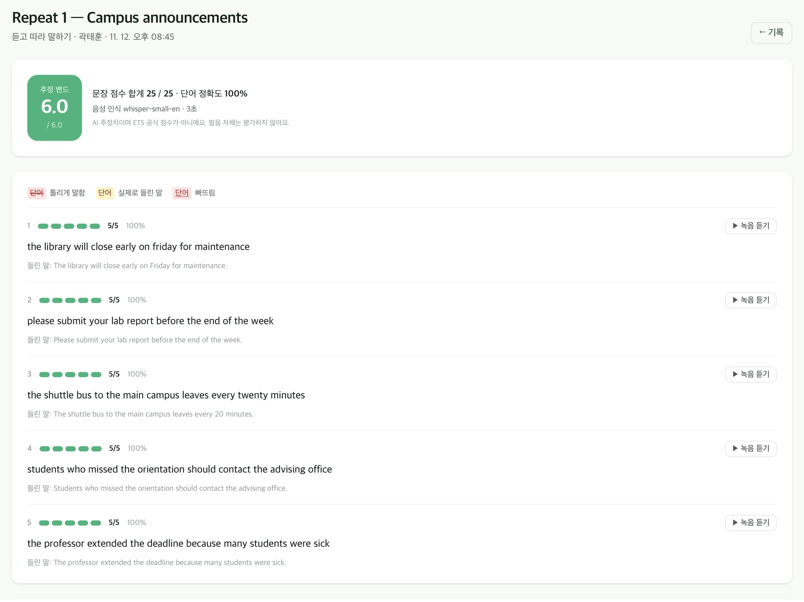
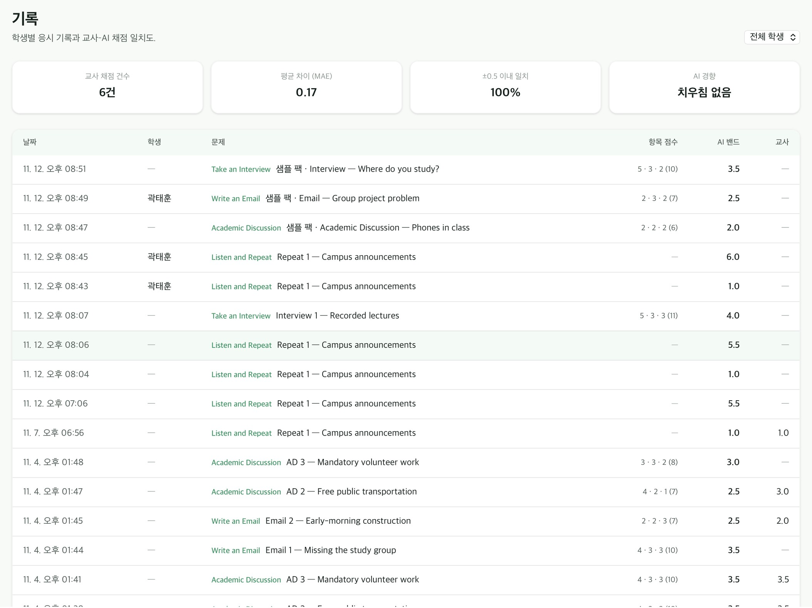

음성 인식·채점 AI·문법 교정 모델을 모두 학생 PC 안에서 실행해, 새 TOEFL의 4개 유형을 실제 시험처럼 응시하고 즉시 근거 있는 채점과 첨삭을 받는 데스크톱 앱입니다. 강사는 AI 결과를 검토하고 직접 첨삭합니다.






밤에 쓴 글도 1분 안에 근거 있는 채점과 첨삭. 같은 문제를 몇 번이고 다시 연습
처음부터 첨삭하는 대신 AI 결과를 검토만. AI 교정 정확도도 함께 측정
학생 데이터가 PC 밖으로 나가지 않고, 인터넷이 막힌 컴퓨터실에서도 동작
문제 파일로 반별 배포. 발음 평가, 교사 데이터로 하는 채점 보정으로 확장